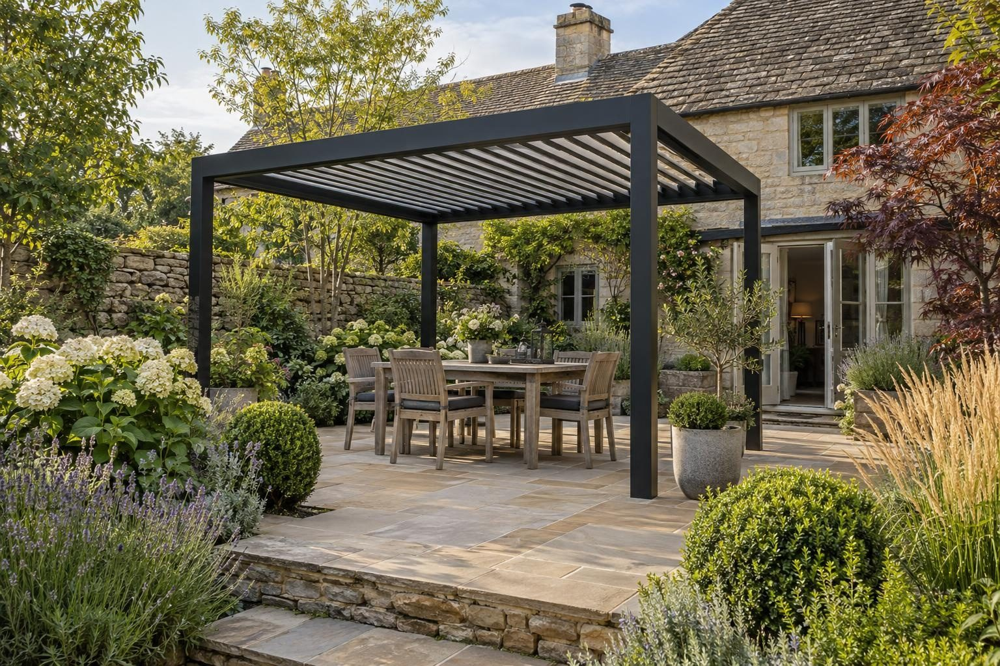

Driveways, gardens and building work in Ryhall
Driveways, patios, garden transformations, extensions and conversions across Ryhall and the villages around it.
For a typical Ryhall drive of 35–65m², a resin bound driveway costs roughly £5,250–£14,250 and block paving £4,250–£11,000. A 25–40m² porcelain patio is roughly £3,750–£8,000, and a full garden transformation typically £15,000–£35,000. A new or wider entrance needs a dropped kerb from Rutland County Council: £194 for the vehicle access permit, and we can build the crossing under the council's permit.
- Council
- Rutland County Council
- Postcode
- PE9
- Conservation
- Conservation area; no Article 4 affecting driveways
- Ground
- Limestone; river ground near the Gwash
Our 2026 guide prices, all in. Your fixed price comes in writing after the site visit. Council fees checked October 2026.
Homes, ground and conservation in Ryhall
Ryhall, with Belmesthorpe, sits on the River Gwash just north of Stamford, with stone cottages around the green and the church, and later estate housing. Being so close to Stamford, many homes here were built by the same post-war and modern housebuilders.
Ryhall is on the limestone, which generally drains well, but the Gwash runs through the village and ground near the river is wetter. We check each site before choosing between a soakaway and channel drainage.
Ryhall has a conservation area covering the historic village and no Article 4 direction, so normal permitted development rules apply outside listed buildings.
The River Gwash runs through Ryhall, and Rutland's flood strategy names Ryhall among the places with a few properties at river flood risk. Check any address on the Environment Agency flood map.
Sources: Rutland conservation areas · Rutland flood risk strategy.
Council rules and fees for Ryhall
- Dropped kerbs: £194 for a Section 184 vehicle access permit (one or two homes); built by an approved contractor with street works accreditation and the right insurance, working under the council's permit. Rutland County Council: dropped kerbs
- Front driveways: A permeable drive, or one that drains to your own lawn or border, needs no planning permission; more than 5m² of impermeable surface draining to the road does. Planning Portal guidance
- Planning: householder applications cost £548 (national fee from April 2026); pre-application advice from Rutland County Council costs £210. Pre-application advice
- Building regulations: Leicestershire Building Control Partnership (LBCP). Garage conversion £517.96 building notice (garage conversion up to 36m²); extension £793.09 for a 10–50m² extension. Building control
- Trees: six weeks' notice for trees in a conservation area, consent for protected trees; both free. Rutland County Council: tree works
Checked October 2026.
Every service in Ryhall
Driveways

Resin driveways

Block paving driveways

Tarmac driveways

Dropped kerbs

Permeable driveways

Driveway drainage

Driveway gates

Bin stores

Porcelain patios

Sandstone patios

Landscaping

Composite & timber decking

Fencing

Garden lighting

Louvred pergolas

Glass verandas

Outdoor kitchens

Fire pits & sunken seating

Hot tub & swim spa bases

Garage conversions

House extensions

Porch extensions

Accessible paths & ramps

Building services
Every service in Ryhall
Driveways
- Driveways in Ryhall
- Resin driveways in Ryhall
- Block paving driveways in Ryhall
- Tarmac driveways in Ryhall
- Gravel driveways
- Dropped kerbs in Ryhall
- Driveway repairs
- Permeable driveways in Ryhall
- Driveway drainage in Ryhall
- Driveway gates in Ryhall
- Bin stores in Ryhall
- Block paving cleaning
- Do I need planning for a driveway?
Patios and gardens
Outdoor living
Building work
“Really pleased with my new driveway. Beautifully finished, friendly professional workmen, would definitely recommend and will be using them again for the garden once other renovations complete.”
Driveway — Google review
“Absolutely great guys, job was done in good time and looks brilliant. No complaints, the driveway is immaculate. More work in the near future, thanks again!”
Driveway — Google review
Villages we cover around Ryhall
- Belmesthorpe
- Essendine
- Great Casterton
- Little Casterton
- Uffington
Things people in Ryhall ask us
How much does a driveway cost in Ryhall?
Which council covers Ryhall?
Do I need planning permission for a driveway in Ryhall?
How quickly can you visit Ryhall?
Request a site visit in Ryhall
We measure up, check levels and drainage, and send a written proposal with the build-up, the programme and one whole price. No pressure and no follow-up sales calls.